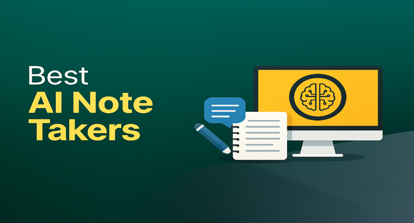
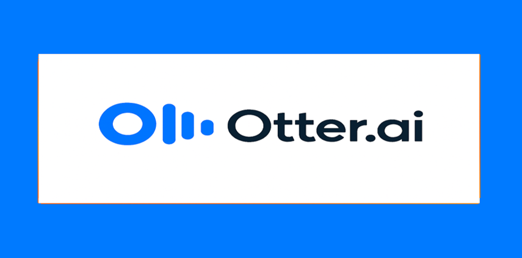
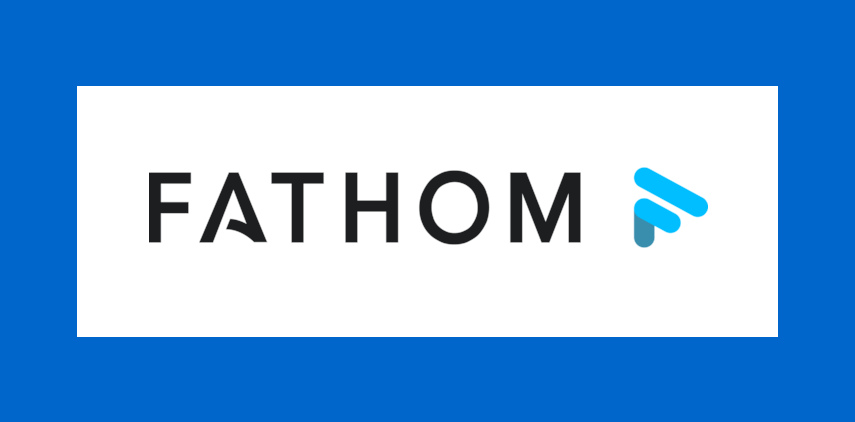

Best AI Note Taking Apps in 2025
James McGill | Updated on April 1st 2025Privacy and Technology Consultant In a hurry? Here’s the top AI Note Taking App for 2025:
- 🏆 Clickup: ClickUp combines project management with intelligent AI note-taking to help teams stay organized and aligned. Its AI Notetaker captures meetings, generates instant summaries, and creates tasks from key discussion points—all in one workspace. With deep integrations and smart automation, ClickUp makes it easy to turn conversations into action.
- Get the best AI Note Taking App of 2025 here.
- Read more about Clickup here.
Staying organized and capturing ideas used to mean scribbling in notebooks, typing up meeting minutes, and hoping you didn't miss any crucial details. But in 2025, AI note-taking apps are transforming the way we document and manage information. With features like real-time transcription, intelligent summaries, and seamless integration across devices, you can now ensure that every important point is captured and easily accessible—without the manual effort.
Whether you're a student attending lectures, a professional navigating back-to-back meetings, or a creative mind brainstorming your next big project, these AI-powered tools help you focus on what truly matters by handling the note-taking process for you.
But First, What Exactly Are AI Note-Taking Apps?
AI note-taking apps leverage artificial intelligence to enhance the process of capturing, organizing, and retrieving information. They offer functionalities such as automated transcription of audio recordings, summarization of lengthy texts, intelligent organization of notes, and even content generation based on prompts. It's like having a personal assistant dedicated to ensuring your notes are comprehensive, organized, and tailored to your needs.
Instead of manually jotting down every detail or spending hours organizing your notes, these apps streamline the process, allowing you to concentrate on understanding and utilizing the information. From generating summaries to suggesting related content, these tools empower users to manage their knowledge more effectively.
However, not all AI note-taking apps are created equal. Some may have steep learning curves, while others might lack essential features or fail to integrate smoothly with your existing workflow. Choosing the right AI note-taking app can make the difference between a cluttered digital workspace and a well-organized repository of valuable information.
If you're ready to elevate your note-taking experience and boost your productivity, you're in the right place. We've reviewed the top AI note-taking apps for 2025—so you can skip the guesswork and select a tool that aligns with your needs. Let's dive in!
An overview of the best AI Note Taking Apps for 2025:
- 🥇 1. Clickup — ClickUp is a powerful productivity platform that now includes AI-powered note-taking features designed to streamline meetings and boost team efficiency. Its built-in AI Notetaker records calls, generates smart summaries, and turns key insights into actionable tasks—all without leaving the platform. With integrations for Zoom, Google Meet, and Microsoft Teams, plus AI agents for summarization and content organization, ClickUp helps teams capture, manage, and act on information effortlessly.
- 🥈 2. Otter — Otter.ai specializes in providing real-time transcription services, making it an invaluable tool for meetings, lectures, and interviews. Beyond transcription, Otter.ai offers features like speaker identification, keyword summaries, and collaborative editing, ensuring that your notes are accurate and actionable. Its integration with platforms like Zoom further enhances its utility in virtual settings.
- 🥉 3. Fathom — Fathom is an AI meeting assistant built to take notes for you—so you can stay fully present in every conversation. It automatically records, transcribes, and summarizes Zoom, Google Meet, and Microsoft Teams calls, delivering shareable highlights and actionable insights within seconds. With CRM integrations, multilingual support, and the ability to create video clips from key moments, Fathom makes follow-ups faster and meetings more productive.
- Frequently Asked Questions about AI Note Taking Apps (FAQ).
Why Use AI Note-Taking Apps?
AI note-taking tools are revolutionizing how we capture and manage information—especially in an era where efficiency, accuracy, and accessibility are paramount. Here's why more individuals and organizations are embracing these tools:
- Enhance Productivity: By automating the note-taking process, AI apps free you from the distraction of manual documentation, allowing you to focus on active participation in meetings, lectures, or brainstorming sessions. This leads to more engaged interactions and a deeper understanding of the material.
- Improve Accuracy and Comprehension: AI-powered transcription and summarization ensure that key points are captured accurately, reducing the risk of misinterpretation or omission. Features like speaker identification and keyword highlights further aid in comprehending and navigating through extensive notes.
- Organize Information Efficiently: With intelligent categorization and search functionalities, AI note-taking apps help you organize and retrieve information effortlessly. Whether it's linking related notes, tagging content, or creating customizable folders, these tools adapt to your preferred organizational style.
- Facilitate Collaboration: Many AI note-taking apps offer collaborative features, enabling teams to share notes, edit documents in real-time, and provide feedback seamlessly. This fosters a more cohesive and informed working environment, whether in-person or remote.
- Integrate Seamlessly with Existing Tools: Modern AI note-taking apps are designed to integrate with other productivity tools such as calendars, project management software, and communication platforms. This ensures a smooth workflow and reduces the need to switch between multiple applications.
Choosing the Right AI Note-Taking App: With so many AI note-taking solutions available, it’s important to find one that fits your team’s unique needs—whether it’s seamless collaboration, smart meeting notes, or integrations with your existing tools. To make your decision easier, we’ve highlighted three standout options that excel in different areas.
1. Clickup — Best for AI-Powered Meeting Notes and Summarization

ClickUp is a versatile project management platform that has expanded its capabilities to include AI-powered note-taking features, enhancing team collaboration and productivity. Its intuitive interface integrates task management, document collaboration, and real-time communication, providing a centralized workspace for teams of all sizes.
A standout feature is ClickUp's AI Notetaker, which automates the process of capturing meeting notes. This tool records meetings, generates searchable transcripts, and creates smart summaries with actionable items that can be directly converted into tasks. By integrating with popular video conferencing platforms like Zoom, Microsoft Teams, and Google Meet, the AI Notetaker ensures seamless operation across various meeting environments.
ClickUp also offers AI agents designed to streamline note-taking and summarizing. These agents capture essential details, condense lengthy documents, and help maintain an organized digital workspace. Features include voice recognition for hands-free note-taking, text summarization for quick overviews, and content organization for efficient information retrieval.
ClickUp's AI note-taking capabilities provide a robust solution for teams seeking to enhance their meeting productivity and information management. Its seamless integration with existing workflows, coupled with advanced AI features, makes it a valuable asset for organizations aiming to streamline their processes and foster effective collaboration.
Get Clickup - Never take notes again!
2. Otter — Best for Real-Time Transcription and Collaboration

Otter.ai is a leading AI note-taking app designed to transcribe conversations in real time, making it a go-to solution for professionals, students, and teams who need fast, accurate meeting notes. Whether you're in a live Zoom call, recording a lecture, or hosting a brainstorming session, Otter captures every word and turns spoken content into searchable, organized text.
What sets Otter apart is its focus on live collaboration. As the app transcribes, users can highlight key points, add comments, and assign action items—all in real time. Its speaker identification feature makes multi-person conversations easy to follow, and the keyword summary provides a snapshot of important topics at a glance.
What sets Otter apart is its focus on live collaboration. As the app transcribes, users can highlight key points, add comments, and assign action items—all in real time. Its speaker identification feature makes multi-person conversations easy to follow, and the keyword summary provides a snapshot of important topics at a glance.
Otter.ai is more than just a transcription tool—it’s a real-time collaboration assistant. With features that support live note-taking, team collaboration, and instant meeting insights, it’s ideal for remote teams, busy professionals, and anyone who wants to spend less time writing notes and more time getting things done.
Get Otter - Never take notes again!
3. Fathom — Best for Automated Meeting Transcription and Summarization

Fathom is an AI-powered meeting assistant designed to streamline the process of recording, transcribing, and summarizing virtual meetings. Compatible with platforms like Zoom, Google Meet, and Microsoft Teams, Fathom allows users to focus on conversations while it handles note-taking tasks.
A standout feature of Fathom is its ability to generate comprehensive meeting summaries within 30 seconds of a meeting's conclusion. These summaries include key discussion points and action items, facilitating quick follow-ups and enhanced productivity. Additionally, Fathom offers seamless integration with CRM systems such as Salesforce, HubSpot, and Close, automatically syncing meeting notes and tasks to keep records up-to-date.
Fathom also supports the creation and sharing of specific meeting clips, allowing users to highlight and disseminate important moments from discussions. This feature is particularly useful for teams looking to provide context and clarity without sharing entire meeting recordings. Furthermore, Fathom's multilingual capabilities enable it to summarize calls held in various languages and translate summaries into 28 different languages, catering to diverse teams and international collaborations.
Fathom's comprehensive suite of features makes it a valuable tool for professionals seeking to enhance meeting efficiency and collaboration. Its rapid transcription and summarization capabilities, coupled with seamless CRM integration and multilingual support, position it as a leading solution in the realm of AI-powered meeting assistants.
Get Fathom - Never take notes again!
How Did We Choose the Best AI Note-Taking Apps?
To identify the best AI note-taking apps for 2025, we evaluated each platform based on the real needs of modern users—whether you're a student, professional, or part of a growing team. Here's what we looked for:
- 1. Primary Use Case: We started by considering different user types and scenarios—like capturing meeting transcriptions, organizing research, managing collaborative notes, or studying for exams. The best apps are purpose-built or flexible enough to adapt to a range of needs, and we gave higher marks to those that clearly deliver on their core use case.
- 2. Essential Features: We prioritized apps with features that genuinely improve productivity—such as real-time transcription, AI-powered summaries, speaker identification, cross-device syncing, and smart search. Tools that offered bonus capabilities like task integration, flashcard creation, or tone adjustment stood out even more.
- 3. Compatibility and Integrations: A great note-taking app should work smoothly with your existing workflow. We favored platforms that integrate well with popular tools like Zoom, Slack, Google Workspace, and Microsoft 365. We also considered cross-platform availability—web, desktop, and mobile access all earned extra points.
- 4. Privacy and Security: Since note-taking often involves sensitive information, we looked closely at security features. Apps with end-to-end encryption, strong user privacy protections, and clear data usage policies ranked higher. Business-ready tools with GDPR compliance and enterprise-level controls received top consideration.
- 5. Pricing and Scalability: We reviewed pricing structures to make sure users are getting good value—whether on a free plan or a premium subscription. We also looked at how well each app scales, especially for teams or growing businesses. Apps that offer flexible plans, team collaboration tools, and reasonable upgrade paths scored best.
By applying these criteria, we narrowed down the list to the most reliable, feature-rich, and user-friendly AI note-taking tools available today. Whether you're working solo or with a team, these platforms stood out for their ability to make note-taking smarter, faster, and easier.
Best AI Note Taking Apps - Frequently Asked Questions
📕 What is an AI note-taking app?
An AI note-taking app utilizes artificial intelligence to assist users in capturing, organizing, and retrieving notes. Features may include automatic transcription of audio recordings, summarization of lengthy texts, intelligent categorization, and content generation based on prompts.
📝 How do AI note-taking apps differ from traditional note-taking tools?
Unlike traditional note-taking tools, AI-powered apps can automatically transcribe spoken words, generate summaries, suggest related content, and organize notes intelligently, reducing manual effort and enhancing efficiency.
🎙 Can AI note-taking apps transcribe audio and video files?
Yes, many AI note-taking apps can transcribe audio and video content into text format. The accuracy of transcription depends on factors like audio quality and language complexity.
🎬 Is it possible to add images, audio, or video to my notes?
Absolutely. Many AI note-taking apps support the inclusion of various media formats, allowing users to enhance their notes with images, audio clips, and videos.
🗓 Can these apps summarize long articles or documents?
Yes, AI note-taking apps often feature summarization capabilities, enabling users to condense lengthy texts into concise summaries, saving time and aiding comprehension.
🔐 How secure is my data when using AI-powered note-taking apps?
Most reputable AI note-taking apps employ robust encryption protocols to protect user data. It's advisable to review each app's privacy policy and security measures to ensure your information remains secure.
💽 Are my notes stored locally or in the cloud?
Storage options vary by application. Some apps store notes locally on your device, while others utilize cloud storage for accessibility across multiple devices. Check the app's settings to understand its storage practices.
📱 Can I use AI note-taking apps across multiple devices?
Yes, most AI note-taking apps support cross-device synchronization, allowing you to access and edit your notes on smartphones, tablets, and computers. Ensure the app is compatible with your devices and operating systems.
🔎 How accurate are AI-generated transcriptions?
Transcription accuracy can be high, often exceeding 99%, especially in controlled environments. However, factors like background noise, accents, and speech clarity can affect accuracy.
Transparency and Trust: The aim of this website is to help you find the perfect software for your needs in an easy-to-view comparison list. You can read more about how we review and about our background in the About Us section of this website. Software.fish does not feature all of the software available in the market, we cherry-pick what we consider to be the leaders in each vertical. We try to keep this site updated and fresh, but cannot guarantee the accuracy of the information as well as the prices featured at all times. All prices quoted on this site are based on USD so there could be slight discrepancies due to currency fluctuations. Although the site is free to use, we do earn commissions from the software companies that we have partnered with. If you click on one of our links and then make a purchase, we will get paid by that company. This has an impact on the ranking, score, and order in which the software is presented in our list and elsewhere throughout the site. Software listings on this page DO NOT imply endorsement.